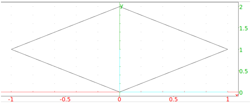
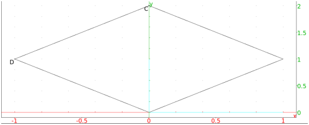

13.9.1 Squares in the plane: square
See Section 14.8.1 for squares in space.
The square command creates squares.
-
square takes two mandatory arguments and two optional arguments.
-
A,B, two points.
- Optionally, varc, vard, two variable names.
- square(A,B ⟨varc,vard⟩)
returns and draws the square ABCD, where the square is traversed counterclockwise.
If the arguments varc and vard are given, then
C and D will be assigned to them.
Examples
-
Input:
square(0,1+i)
Output:

- Input:
square(0,1+i,C,D)
Output:

Input:
affix(C), affix(D)
Output: